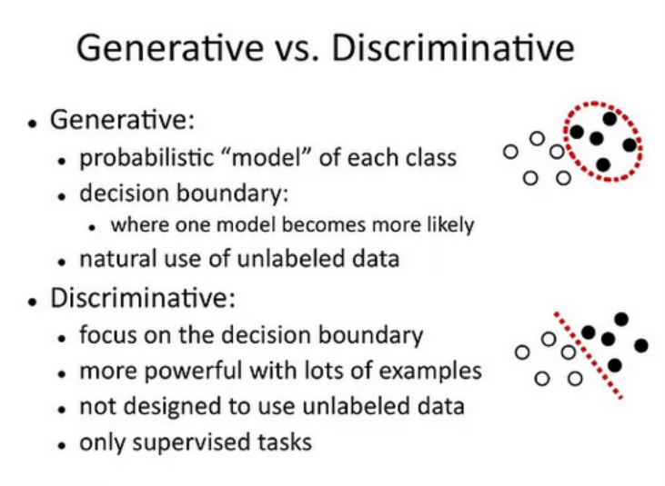
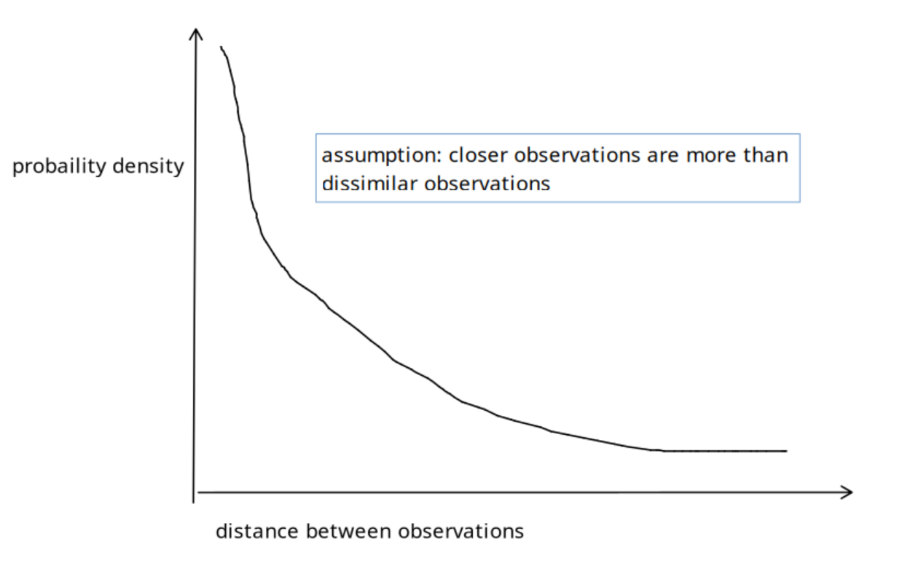

[TOC]
- Title: DEIR: Efficient and Robust Exploration through Discriminative-Model-Based Episodic Intrinsic Rewards
- Author: Shanchuan Wan et. al.
- Publish Year: 18 May 2023
- Review Date: Fri, Apr 12, 2024
- url: https://arxiv.org/abs/2304.10770
Summary of paper

Motivation
- Recent studies have shown the effectiveness of encouraging exploration with intrinsic rewards estimated from novelties in observations
- However, there is a gap between the novelty of an observation and an exploration, as both the stochasticity in the environment and agent’s behaviour may affect the observation.
Contribution
- we propose DEIR, a novel method in which we theoretically derive an intrinsic reward with a conditional mutual information term that principally scales with the novelty contributed by agent explorations, and then implement the reward with a discriminative forward model.
- want to design a novel intrinsic reward design that considers not only the observed novelty but also the effective contribution brought by the agent.
Some key terms
internal rewards
- intrinsic rewards is devised to encourage visiting states that are likely to be more novel, where novelty is defined as either the distance between the current and the past observations or the difference between model predictions and realities.
- however, the relationship between the observed novelty and the agent’s actions has not yet been explicitly decoupled. In other words, effectively handling trivial novelties remains unaddressed, as they are rooted in the stochasticity in the environment’s dynamics and have little to do with the agent’s exploration capabilities (e.g., the “noisy TV” problem [Pathak et al., 2017])
- I think the author wants to consider the action sequence to determine the novelty to prevent the noisy TV problem.
exploration, what is it?
- the method effectively decouples the stochasticity in the environment and the novelty gained by the agent’s exploration.
- the author wants to say that the exploration shall be come from the agent’s policy contribution rather than coming from the stochastic state transitions
mutual information term
- purpose: designed to distinguish between the contributions to novelty caused by the state transitions and by the agent’s policy.
- the method incorporates the advantages of the two categories: while we explicitly encourage our agent to seek novel observations, we also rely on a discriminative model to construct a conditional mutual inforamation term that scales novelty in the observation space, incorporating the model-based prediction task from prediction error-driven methods
discriminative forward model
- generative model focus on modeling the distribution
- discriminative model focus on the decision boundary
- The term “discriminative” refers to the fact that this model directly predicts the output (next state or observation) without explicitly modeling the underlying probability distribution of the data.
RND
- RND defines the distance as the difference between the outputs of a parameter-fixed target neural network and a randomly initialized neural network. In this approach, the parameter-fixed network is used to be distilled into the learning network, effectively “evolving” a distance metric that adjusts dynamically the the agent’s experience.
In probability notation, the symbols “;” and “,” are used to distinguish between different types of conditioning in a probabilistic model, specifically in the context of conditional probability distributions. Here’s what each symbol typically represents:
-
"," (comma): The comma is used to denote joint probabilities or to list multiple conditions in a conditional probability. It essentially represents a logical AND. For example, ( P(A, B) ) refers to the probability of both ( A ) and ( B ) occurring. In a conditional setting, ( P(X | Y, Z) ) indicates the probability of ( X ) given that both ( Y ) and ( Z ) are true.
-
";" (semicolon): The semicolon is used less frequently and serves to separate variables that are part of the conditioning environment from those that we condition upon. It’s particularly useful in more complex scenarios where clarity is needed about the nature of the conditioning. For example, ( P(X ; Y | Z) ) can be interpreted as the probability of ( X ), considering ( Y ) as a parameter or a fixed condition, given ( Z ). This notation isn’t standard in all statistical texts but can be seen in fields like information theory or in specific research papers where distinctions between types of conditions are crucial.
P(X;Y|Z) vs P(X,Y|Z)
-
Comma Usage: ( P(X | Y, Z) ) is read as “the probability of ( X ) given ( Y ) and ( Z )”. Here, ( Y ) and ( Z ) are conditions that both need to be true for the probability of ( X ) to be considered.
-
Semicolon Usage: ( P(X ; Y | Z) ) might be used (in certain contexts) to suggest a different nuance, such as “the probability of ( X ) under a model parameterized by ( Y ), given ( Z )”. This notation can help separate model parameters or fixed properties from the stochastic variables being conditioned on. This kind of notation might be found in contexts where parameters or regimes are considered alongside random variables, though, as noted, it is less standard and can vary in interpretation based on the field and context.
In general, the use of “;” in probability notation is much rarer and less standardized than “,”, and its meaning can depend heavily on the specific context or the author’s definitions. If you encounter this in a text or a paper, it’s advisable to look for an explanation or definition provided in that document to understand exactly how the author intends it to be interpreted.
Conditional Mutual Information
https://arxiv.org/abs/1906.01824

Episodic Intrinsic rewards
scaling the novelty
- KL divergence – the higher means the two distribution are more dissimilar
Mutual Information Formula:

This tells us how much the action (a_t) impacts the change in observation, beyond what could be expected just from knowing the current and previous states alone.
-
Bretagnolle–Huber Inequality: $$ \mathrm{D_{KL}}(P | Q) \geq - \mathrm{log} (1 - \mathrm{d^2_{TV}}(P, Q) ), $$
A mathematical tool used here to simplify and lower-bound the KL divergence, which is a measure of how one probability distribution diverges from a second, expected probability distribution.
-
Simplified Surrogate Function: $$ \mathrm{D_{KL}}(P | Q) \geq \mathrm{log}{\left( \mathrm{dist}(s_t, s_i) \right)} + \frac{\mathrm{dist}(o_{t+1}, o_i)}{\mathrm{dist}(s_t, s_i)} + \mathrm{const}. $$
This simplifies the KL divergence using the total variation distance and distances between states and observations, providing a way to estimate the mutual information in terms of observable quantities.
-
Final Formulation: $$ J \ge \min_{i}{\frac{\mathrm{dist}^2(o_{t+1}, o_i)}{\mathrm{dist}(s_t, s_i)}}, $$
This provides a lower bound for the original objective, focusing on the squared ratio of differences between new and old observations to the differences in the corresponding states. This formulation simplifies the calculation while maintaining effectiveness.
Assumption
Distribution $P (x) = p(x|s_t, s_i, a_t)$, and assume given $s_t$, $s_i$, $a_t$ in deterministic environments (including POMDPs), $s_{t+1}$, $o_{t+1}$ and $D_{t+1, i}$, are uniquely determined. P is thus a unit impulse function which has the only non-zero value at $D_{t+1,i}$:

convert $-\log(Q(D_{t+1,i}))$, where $Q(D_{t+1,i})$ = $p(dist(o_{t+1}, o_i) | s_t, s_i, a_t)$
- the use of the exponential distribution
- Modeling Assumption: The exponential distribution is often used in scenarios where we are modeling the time or distance until an event occurs, especially when events happen independently with a constant average rate. In this context, the ’event’ is the observation at a certain distance from a previous observation, under the assumption that smaller distances are more likely than larger ones due to the continuity in state and observation spaces.
- 
- so we assume $p(dist(o_{t+1}, o_i) | s_t, s_i, a_t)$ = $\lambda\exp(-\lambda dist(o_{t+1}, o_i))$ where $\lambda = \frac{1}{dist(s_t, s_i)}$ is the rate parameter, usually it means that the expected value of dist(o) is dist(s), Thus, the average expected observation distance aligns with the underlying state distance, providing a direct and meaningful link between the state space and observation space.
The logarithmic transformation of the probability density function (PDF) of the exponential distribution is used for simplification and to derive further insights. Here’s how it works:
-
Original PDF: The PDF of the exponential distribution for $D_{t+1,i}$ is given by: $$ Q(D_{t+1,i}) = \lambda e^{-\lambda D_{t+1,i}} $$ Substituting $\lambda = \frac{1}{\mathrm{dist}(s_t, s_i)}$, the PDF becomes:
$$ Q(D_{t+1,i}) = \frac{1}{\mathrm{dist}(s_t, s_i)} \exp\left(-\frac{\mathrm{dist}(o_{t+1}, o_i)}{\mathrm{dist}(s_t, s_i)}\right) $$
-
Logarithm of the PDF: Applying the logarithm to the PDF, we get:

This simplifies using the properties of logarithms ($-\log(ab) = -\log a - \log b$) to:

The term $\log(\mathrm{dist}(s_t, s_i))$ reflects the natural logarithm of the distance between states, while the other term linearly scales the observation distance by the inverse of the state distance, effectively normalizing it.
Now the issue is how to represent state
-
Episodic Reward: The intrinsic reward $ r_t^{{\tiny I}} $ is calculated and applied within the confines of a single episode. This means the reward is based solely on the agent’s experiences and actions from the start of the episode to the current timestep $ t $.
-
Observations and Trajectories:
- Embeddings of Observations ($e_{obs_t}$): These are feature representations derived from the observations $ o_t $. Embeddings reduce complex observations into a form (like vectors) that captures essential information in a more manageable size.
- Embeddings of Trajectories ($e_{traj_t}$): These are similar feature representations but for trajectories. A trajectory at time $ t $, $ \tau_t $, is likely a sequence or aggregation of states or observations leading up to $ t $. The embedding $ t_{traj_t} $ serves as a practical approximation of the state $ s_t $, especially useful in scenarios where $ s_t $ cannot be directly observed (common in Partially Observable Markov Decision Processes or POMDPs).
-
Euclidean Distance: The reward formula uses the Euclidean distance between these embeddings to quantify differences between past and current observations and trajectories.
Intrinsic Reward Formula
The intrinsic reward at time $ t $, denoted as $ r_t^{{\tiny I}} $, is defined by:
$$ r_t^{\tiny I} = \min_{\forall i \in \left[0, t\right)} \left\lbrace \frac{ \mathrm{dist}^2 (e_{obs_i}, e_{obs_{t+1}}) }{ \mathrm{dist}(e_{traj_i}, e_{traj_t}) + \epsilon} \right\rbrace $$
Components of the Formula
-
Numerator ($ \mathrm{dist}^2 (e_{obs_i}, e_{obs_{t+1}}) $): This represents the squared Euclidean distance between the current observation’s embedding and the embeddings of all previous observations. Squaring the distance emphasizes larger differences, making the reward more sensitive to novel observations.
-
Denominator ($ \mathrm{dist}(t_{traj_i}, t_{traj_t}) + \epsilon $): This includes the Euclidean distance between the current trajectory embedding and all previous ones, adjusted by a small constant $ \epsilon $ for numerical stability (to avoid division by zero). This denominator essentially normalizes the reward by how much the trajectory has changed, preventing the reward from becoming disproportionately large simply due to minor observation changes in similar state contexts.
-
Minimization: The intrinsic reward takes the minimum value across all previous time steps $ i $. This ensures that the reward is focused on the most novel (or least similar) observation relative to the past, which strongly encourages exploration of new states or actions that lead to new observations.
Learning a discriminative model

Results
The result is pretty good